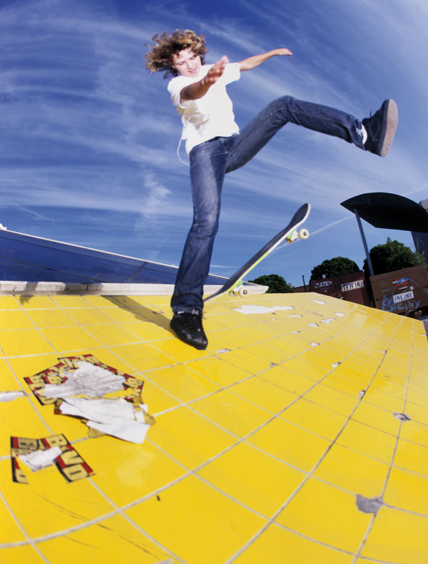
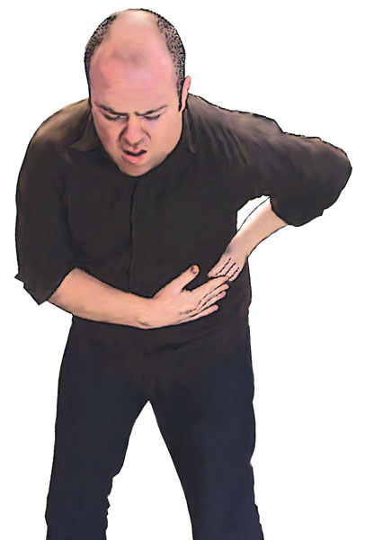
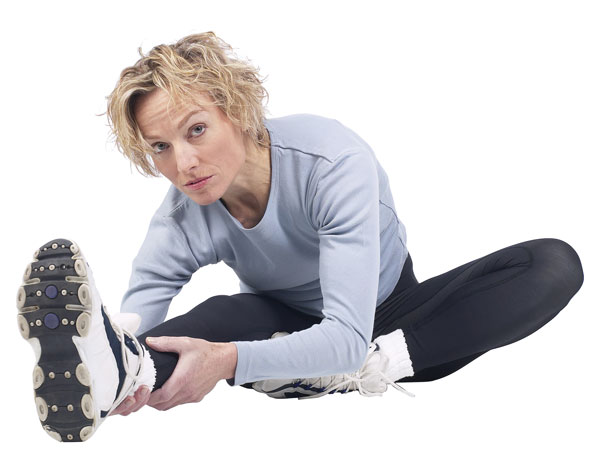

Minor Sports Injuries
Most sports injuries are preventable. To help avoid injuries, participants should maintain fitness, train adequately, play to standard, use the correct equipment and clothing, and cease activity as soon as a suspected injury occurs.
Most sports are either contact sports, like rugby and judo, or non-contact sports like tennis, skateboarding, swimming and cricket. Some sports, such as netball and waterpolo, are essentially non-contact, but unavoidable person-to-person contact does occur. Certain types of injury are particular to certain sports, and as an example, facial injuries are more prevalent in contact sports such as rugby, than in non-contact sports such as tennis.
Most major sports injuries can be recognised by their attendant signs and symptoms, and treatment can be provided as required. Head injuries, concussion, lacerations, soft tissue injuries and fractures, are recognisable and can be effectively treated by anyone trained in basic first aid.
Certain other sports injuries are more common, and may require more specific first aid treatment. Some common types are addressed below:
Chest cramps (or 'stitches'). Usually caused by cramps of the intercostal muscles between the ribs, or the diaphragm high in the abdomen. Brought on by exertion, chest cramps are identified by sharp, spasmodic pain in the chest, difficulty in standing upright, and gasping respirations. A 'Stitch' will disappear with rest and concentration on deep breathing.
Groin and testicle injuries. Caused by a blow to the groin, or by over-stretching the associated muscles. Characterised by pain to the region of the groin, sometimes nausea or vomiting. The casualty will be unable to stand upright, and will 'guard' the injured area with his hands. The casualty should be placed on his back with knees slightly bent, and have an ice pack applied with caution to the injury site. Seek medical aid.
Muscle cramps. Caused by over-stretching muscles, or by abnormal muscle contraction. They may also be associated with loss of fluid due to excessive sweating.
Characterised by pain, tenderness, loss of power and stiffening or spasms of the muscles. Muscles respond to rest, application of an ice pack, then subsequent gentle stretching. DO NOT massage the affected muscles.
'Winding'. Caused by a blow to the abdomen which temporarily 'paralyses' the diaphragm. Characterised by breathing difficulty, gasping attempts to breathe, lack of chest movement, bending at the waist and 'guarding' the abdomen. The casualty should be placed in a reclining position and reassured until they regain the ability to breathe. DO NOT 'pump' the casualty's legs, as this delays recovery.
'Tennis elbow'. This injury is due to a strain of the tendons and muscles associated with the elbow. Severe cases also involve the ligaments. It is usually a chronic condition, and presents when the elbow is over-used or over-stretched.
Tennis elbow is characterised by pain usually centred over the bone on the outer side of the joint that becomes more severe on movement. The casualty may need medical attention for pain relief, so application of an ice pack and support in a sling, as well as a visit to hospital, is advised.
'Shin splints'. This injury is due to a strain of the long flexor muscle of the toes, characterised by pain along the shinbone. This is an injury common to track athletes and footballers.
First aid is rest, application of an ice pack, and elevation of the limb. Repetitive injury should be examined and treated by a medical professional.
Other sports injuries should be treated as they present, and medical aid sought as a matter of course. Injuries sustained by many athletes are chronic, and recur on a regular basis. If these injuries are in the form of sprains and strains, they may require support in the form of strapping or taping.
Provided that a doctor has assessed the athlete, and that no other form of treatment has been prescribed, strapping may be applied by a qualified person to support the injured part.